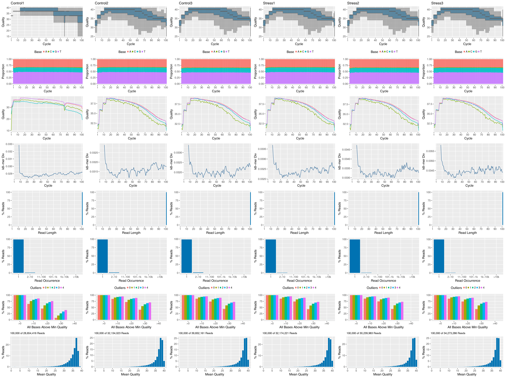
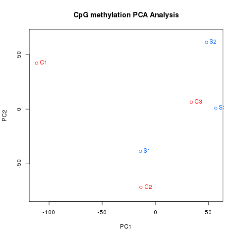

Methyl-Seq Workflow Template
Author: Daniela Cassol (danielac@ucr.edu) and Thomas Girke (thomas.girke@ucr.edu)
Last update: 22 February, 2020
Source:vignettes/systemPipeMethylseq.Rmd
systemPipeMethylseq.RmdIntroduction
Users want to provide here background information about the design of their Methyl-Seq project.
Cytosine methylation is one of the important epigenetic mechanism to control gene expression. The epigenetic modification is has been associated with many biological processes, including various diseases and normal development, as well. One of the techniques for profiling genome-wide DNA methylation is based on sodium bisulfite, followed by NGS (BS-seq). Whole-genome bisulfite sequencing (WGBS) provides global coverage at a single-base resolution. This protocol effectively converts on-methylated cytosines into uracils, while methylated cytosines are preserved. Eventually, uracils are converts into thymines during the PCR amplification cycles.
Sample definitions and environment settings
Environment settings and input data
Typically, the user wants to record here the sources and versions of the reference genome sequence along with the corresponding annotations. In the provided sample data set all data inputs are stored in a data subdirectory and all results will be written to a separate results directory, while the systemPipeMethylseq.Rmd script and the targets file are expected to be located in the parent directory. The R session is expected to run from this parent directory.
The chosen data set SRP097911 contains single-end (SE) read sets from Arabidposis thaliana (Ganguly et al. 2017).
The following loads one of the available NGS workflow templates (here Methyl-Seq) into the user’s current working directory. At the moment, the package includes workflow templates for RNA-Seq, ChIP-Seq, VAR-Seq, Ribo-Seq and Methyl-Seq. Templates for additional NGS applications will be provided in the future.
library(systemPipeRdata)
genWorkenvir(workflow = NULL, package_repo = "systemPipeR/systemPipeMethylseq")
setwd("systemPipeMethylseq")Now open the R markdown script systemPipeMethylseq.Rmdin your R IDE (e.g. vim-r or RStudio) and run the workflow as outlined below.
Required packages and resources
The systemPipeR package needs to be loaded to perform the analysis steps shown in this report (Girke 2014).
Experiment definition provided by targets file
The targets file defines all FASTQ files and sample comparisons of the analysis workflow.
targetspath <- system.file("extdata", "targets.txt", package = "systemPipeR")
targets <- read.delim(targetspath, comment.char = "#")
targets[1:4, 1:4]## FileName SampleName Factor SampleLong
## 1 ./data/SRR446027_1.fastq.gz M1A M1 Mock.1h.A
## 2 ./data/SRR446028_1.fastq.gz M1B M1 Mock.1h.B
## 3 ./data/SRR446029_1.fastq.gz A1A A1 Avr.1h.A
## 4 ./data/SRR446030_1.fastq.gz A1B A1 Avr.1h.BRead preprocessing
Read quality filtering and trimming
The function preprocessReads allows to apply predefined or custom read preprocessing functions to all FASTQ files referenced in a SYSargs2 container, such as quality filtering or adapter trimming routines. The paths to the resulting output FASTQ files are stored in the output slot of the SYSargs2 object. The following example performs adapter trimming with the trimLRPatterns function from the Biostrings package. After the trimming step a new targets file is generated (here targets_trim.txt) containing the paths to the trimmed FASTQ files. The new targets file can be used for the next workflow step with an updated SYSargs2 instance, e.g. running the NGS alignments using the trimmed FASTQ files.
Construct SYSargs2 object from cwl and yml param and targets files.
dir_path <- system.file("extdata/cwl/preprocessReads/trim-se",
package = "systemPipeR")
trim <- loadWorkflow(targets = targetspath, wf_file = "trim-se.cwl",
input_file = "trim-se.yml", dir_path = dir_path)
trim <- renderWF(trim, inputvars = c(FileName = "_FASTQ_PATH1_",
SampleName = "_SampleName_"))
trim
output(trim)[1:2]FASTQ quality report
The following seeFastq and seeFastqPlot functions generate and plot a series of useful quality statistics for a set of FASTQ files including per cycle quality box plots, base proportions, base-level quality trends, relative k-mer diversity, length and occurrence distribution of reads, number of reads above quality cutoffs and mean quality distribution. The results are written to a PDF file named fastqReport.pdf.
fqlist <- seeFastq(fastq = infile1(trim), batchsize = 10000,
klength = 8)
pdf("./results/fastqReport.pdf", height = 18, width = 4 * length(fqlist))
seeFastqPlot(fqlist)
dev.off()
Alignments
Read mapping with Bowtie/Bismark
The NGS reads of this project will be aligned against the reference genome sequence using Bowtie/Bismark (Langmead and Salzberg 2012, @Krueger2011-uu) in both interactive job submissions and batch submissions to queuing systems of clusters using the systemPipeR's new CWL command-line interface.
Bisulfite sequencing aligners, like Bismark Krueger and Andrews (2011)] are based on three-letter algorithm. Which converts all Cs in the reference genome and the read into Ts, and thus, standard aligners with lower mappability can be adopted due to reduced sequence complexity.
Build Bismark index.
dir_path <- "param/cwl/bismark/bismark_idx/"
idx <- loadWorkflow(targets = NULL, wf_file = "bismark-index.cwl",
input_file = "bismark-index.yml", dir_path = dir_path)
idx <- renderWF(idx)
idx
cmdlist(idx)
## Run in single machine
runCommandline(idx, make_bam = FALSE)The parameter settings of the aligner are defined in the bismark-mapping.cwl and bismark-mapping.yml files. The following shows how to construct the corresponding SYSargs2 object, here args.
dir_path <- "param/cwl/bismark/bismark/"
args <- loadWorkflow(targets = targetspath, wf_file = "bismark-mapping-se.cwl",
input_file = "bismark-mapping-se.yml", dir_path = dir_path)
args <- renderWF(args, inputvars = c(FileName = "_FASTQ_PATH1_",
SampleName = "_SampleName_"))
args
cmdlist(args)[1:2]
output(args)[1:2]
## Run in single machine
args <- runCommandline(args, make_bam = FALSE)Check whether all BAM files have been created and write the new targets file.
Read and plot the alignment stats
The following step provides an overview of the number of reads in each sample and how many of them aligned to the reference. By default, in the alignment process, after the conversion to bedGraph has completed, the option –cytosine_report produces a genome-wide methylation report for all cytosines in the genome. The following step generates a graphics output with methylation levels.
source("R_function/read.align.bs.R") ## FIX rownames TABLE.
align_stats <- read.align.bs()
align_stats[1:4, 1:2]Methylation Calling
In order to extract the methylation call for every single C analysed from the Bismark alignment files, we used the bismark_methylation_extractor function. The parameter settings of the function are defined in the bismark_methyl_extractor.param file. Submission of Bismark_extract as a single process.
args <- systemArgs(sysma = "param/bismark_methyl_extractor.param",
mytargets = "targets_bismark.txt")
sysargs(args)[1] # Command-line parameters for first FASTQ file
source("runCommandline.bs.R")
for (i in seq(along = outpaths(args))) {
dir.create(outpaths(args)[i], showWarnings = FALSE)
}
moduleload(modules(args))
runCommandline_bs(args)
Alternatively, submit jobs to compute cluster.
Descriptive statistics on DNA methylation profiles
The coverage per base and Percentage of methylation per base are calculeted using the methylKit R package [Akalin2012-ez].
Import of Bismark methylation output files
The Bisrmark results can be loaded with methRead function. Note that a list containing the paths of the cytosine report files from Bismark needs to be provided, which contains chromosome, position, strand, count methylated, count unmethylated, C-context and trinucleotide context format (output file *.cov. In this case, use pipeline='bismarkCoverage.
library(methylKit)
source("R_function/run_methylKit.R")
targetspath <- "targets.txt"
targets <- read.delim(targetspath, comment = "#")
cmp <- readComp(file = targetspath, format = "matrix", delim = "-")
args <- systemArgs(sysma = "param/bismark_methyl_extractor.param",
mytargets = "targets_bismark.txt")
import.bs <- import.bs.data(targets, args, cmp = cmp[[1]])Alternatively, methylation results can be calculated from sorted SAM or BAM files from Bismark aligner. The coordinate sorted so an extra re-sort step is required, and Samtools[Li2011-qu] are used. The parameter settings of Samtools are defined in the samtools.param file.
The following provides the code on a single machine, but the processing can be submitted to a compute cluster, as well.
## Please note this step may take a while ...
source("clusterRun2.R")
source("runCommandline2.R")
args <- systemArgs(sysma = "param/samtools.param", mytargets = "targets_bismark.txt")
sysargs(args)[1] # Command-line parameters for first FASTQ file
runCommandline(args, make_bam = FALSE)
report1 <- as.list(outfile1(args))
sample.id <- as.character(targets$SampleName)
methRaw <- processBismarkAln(location = report1, sample.id = as.list(sample.id),
assembly = "TAIR10", save.folder = "results/", save.context = NULL,
read.context = "CpG", nolap = FALSE, mincov = 10, minqual = 20,
phred64 = FALSE, treatment = c(0, 0, 0, 1, 1, 1))Coverage per base and Percentage of methylation per base
Histogram of percentage of methylation per cytosine for the first sample generated with the methylKit. Typically, the results of methylation will have a bimodal distribution, which represents the majority of bases with high or low methylation.
pdf("./results/hist_percent_CpG_methyl_sample1.pdf")
getMethylationStats(import.bs[[1]][[1]], plot = T, both.strands = F)
dev.off()The read coverage distribution can be used as an important indication of PCR duplications bias. It is possible to observe secondary peak on the right side of the distribution if the PCR duplication bias is present.
pdf("./results/hist_CpG_coverage_sample1.pdf")
getCoverageStats(import.bs[[1]][[1]], plot = T, both.strands = F)
dev.off()Correlation analysis between samples
The following computes the sample-wise Spearman correlation coefficients between the percentage of methylation profiles across all samples, generated with the methylKit package. In order to calculated the following analysis, it is necessary merge all samples, which only cytosines covered in all samples are stored.
Generte table of percentage methylation for all samples.
perc.meth <- percMethylation(merged_samples)
write.table(perc.meth, "./results/percent_methylation.xls", row.names = FALSE,
quote = FALSE, sep = "\t")The correlation between samples is calculated using getCorrelation function. The analysis can detecting sample outliers.
pdf("./results/sample_correlation.pdf")
getCorrelation(merged_samples, plot = T, method = "spearman")
dev.off()
get_corr <- capture.output(getCorrelation(merged_samples, plot = F))
write.table(get_corr, "./results/sample_correlation.xls", row.names = FALSE,
quote = FALSE, sep = "\t")
Also, it is possible to cluster samples hierarchically based on methylation profiles using Euclidean correlation distance.
pdf("./results/sample_clustering.pdf")
clusterSamples(merged_samples, dist = "euclidean", method = "ward",
plot = T)
dev.off()
Principal Component Analysis (PCA) of the methylation profiles, plot shows principal component 1 and principal component 2 for each sample. Samples closer to each other in principal component space are similar in their methylation profiles.
Analysis of differentially methylated regions (DMRs)
DMR analysis with MethylKit
The analysis of differentially DNA methylation is calculatedby comparing methylation levels between multiple conditions, in order to show the important differences between a treatment and a control group. The following step used the calculateDiffMeth function from MethylKit package to calculate differential methylation. The samples comparisons used by this analysis are defined in the header lines of the targets.txt file. The calculation was based on logistic regression to calculate P-values. P-values will be adjusted to Q-values using SLIM method.
It is possible to select the differentially methylated regions/bases based on q-value and percent methylation difference cutoffs. The following example selects the bases that have q-value < 0.01 and percent methylation difference larger than 25%.
library(methylKit)
source("R_function/run_methylKit.R")
targetspath <- "targets.txt"
targets <- read.delim(targetspath, comment = "#")
cmp <- readComp(file = targetspath, format = "matrix", delim = "-")
args <- systemArgs(sysma = "param/bismark_methyl_extractor.param",
mytargets = "targets_bismark.txt")
dmr.DF <- run_methylKit(targets, args, cmp = cmp[[1]], assembly = "TAIR10",
filter = c(qvalue = 0.01, difference = 25), plot = TRUE)
DMR analysis with DSS
Perform statistical test for DML by calling DMLtest function. This function basically performs following steps: (1) estimate mean methylation levels for all CpG site; (2) estimate dispersions at each CpG sites; (3) conduct Wald test. For the first step, there’s an option for smoothing or not. Because the methylation levels show strong spatial correlations, smoothing can help obtain better estimates of mean methylation when the CpG sites are dense in the data (such as from the whole-genome BS-seq). However for data with sparse CpG, such as from RRBS or hydroxyl-methylation, smoothing is not recommended.
User has the option to smooth the methylation levels or not. For WGBS data, smoothing is recommended so that information from nearby CpG sites can be combined to improve the estimation of methylation levels. A simple moving average algorithm is implemented for smoothing. In RRBS since the CpG coverage is sparse, smoothing might not alter the results much. If smoothing is requested, smoothing span is an important parameter which has non-trivial impact on DMR calling. We use 500 bp as default, and think that it performs well in real data tests.
With the test results, one can call DML by using callDML function. The results DMLs are sorted by the significance.
DMR detection is also Based on the DML test results, by calling callDMR function. Regions with many statistically significant CpG sites are identified as DMRs. Some restrictions are provided by users, including the minimum length, minimum number of CpG sites, percentage of CpG site being significant in the region, etc. There are some post hoc procedures to merge nearby DMRs into longer ones.
Note that the distribution of test statistics (and p-values) depends on the differences in methylation levels and biological variations, as well as technical factors such as coverage depth. It is very difficulty to select a natural and rigorous threshold for defining DMRs. We recommend users try different thresholds in order to obtain satisfactory results. 5. The DMRs can be visualized using showOneDMR function, This function provides more information than the plotRegion function in bsseq. It plots the methylation percentages as well as the coverage depths at each CpG sites, instead of just the smoothed curve. So the coverage depth information will be available in the figure. To use the function, do
library(DSS)
source("R_function/run_dds.R")
targetspath <- "targets.txt"
targets <- read.delim(targetspath, comment = "#")
cmp <- readComp(file = targetspath, format = "matrix", delim = "-")
args <- systemArgs(sysma = "param/bismark_methyl_extractor.param",
mytargets = "targets_bismark.txt")
dss.DF <- run_dss(targets, args, cmp = cmp[[1]], smoothing = TRUE)
## Calling DML
dmls <- callDML(dss.DF[[1]], delta = 0.1, p.threshold = 0.001)
## Calling DMR
dss.obj <- readRDS("./results/dss.input_C-S.rds")
dmrs <- callDMR(dss.DF[[1]], delta = 0.1, p.threshold = 0.05)
pdf("./results/plotRegion.DMR.pdf")
showOneDMR(dmrs[1, ], dss.obj)
dev.off()
DMR analysis with Biseq
Import of Bismark’s methylation output files with BiSeq package (Hebestreit and Klein 2015).
library(BiSeq)
path <- paste(getwd(), "/results", sep = "")
report <- list()
file.list <- as.list(list.files(path, "*.extractor", full.names = TRUE))
report <- list()
for (i in seq(along = file.list)) {
file.list1 <- as.list(list.files(paste0(file.list[i]), ".cov",
full.names = TRUE))
report[length(report) + 1] <- file.list1
}
colData <- DataFrame(group = rep(c("Control", "Control", "Control",
"Stress", "Stress", "Stress")), row.names = c("C1", "C2",
"C3", "S1", "S2", "S3"))
wgbs <- readBismark(files = as.character(report), colData)Number of CpG sites that were covered per sample together with the median of the coverage of these CpG sites and the representation of the coverage distributions per sample.
covStatistics(wgbs)
pdf("./results/CoverangePerSample_biseq.pdf")
covBoxplots(wgbs, col = "cornflowerblue", las = 2)
dev.off()The following detect differentially methylation regions within two groups os samples. First, we detect CpG clusters
wgbs.small <- wgbs[1:10000, ]
wgbs.clust.unlim <- clusterSites(object = wgbs.small, perc.samples = 4/6,
min.sites = 20, max.dist = 100, minCov = 6)
head(rowRanges(wgbs.clust.unlim))
clusterSitesToGR(wgbs.clust.unlim)Next, smooth methylation data within CpG clusters, in order to reduce bias due to high coverages. The effect of the smoothing step can be plot.
ind.cov <- totalReads(wgbs.clust.unlim) > 0
quant <- quantile(totalReads(wgbs.clust.unlim)[ind.cov], 0.9)
quant
wgbs.clust.lim <- limitCov(wgbs.clust.unlim, maxCov = quant)
covBoxplots(wgbs.clust.lim, col = "cornflowerblue", las = 2)
predictedMeth <- predictMeth(object = wgbs.clust.lim)
predictedMeth
region <- GRanges(seqnames = "5", ranges = IRanges(start = 100,
end = 830))
pdf("./results/smoothed_biseq.pdf")
plotMeth(object.raw = wgbs[, 2], object.rel = predictedMeth[,
2], region = region, lwd.lines = 2, col.points = "blue",
cex = 1.5)
dev.off()The follow show the differential methylation between the comparison for some CpG sites. Test CpG clusters for differential methylation and control weighted FDR on cluster.
control <- predictedMeth[, colData(predictedMeth)$group == "Control"]
stress <- predictedMeth[, colData(predictedMeth)$group == "Stress"]
mean.control <- rowMeans(methLevel(control))
mean.stress <- rowMeans(methLevel(stress))
betaResults <- betaRegression(formula = ~group, link = "probit",
object = predictedMeth, type = "BR")
head(betaResults)
vario <- makeVariogram(betaResults)
pdf("./results/smoothed_levels_biseq.pdf")
plot(mean.stress, mean.control, col = "blue", xlab = "Methylation in Controls",
ylab = "Methylation in Stress")
dev.off()Detect CpG clusters containing at least one differentially methylated location.
predictedMethNull <- predictedMeth[1:800, 1:6]
colData(predictedMethNull)$group.null <- rep(c(1, 2), 3)
betaResultsNull <- betaRegression(formula = ~group.null, link = "probit",
object = predictedMethNull, type = "BR")
vario <- makeVariogram(betaResultsNull)
pdf("./results/estimated_variogram_biseq.pdf")
plot(vario$variogram$v)
vario.sm <- smoothVariogram(vario, sill = 0.9)
lines(vario.sm$variogram[, c("h", "v.sm")], col = "red", lwd = 1.5)
grid()
dev.off()Next, we trimed the rejected CpG clusters that is to remove the not differentially methylated CpG sites at q1 what can be interpreted as the location-wise FDR. Also, it is possible define the boundaries of DMRs as rejected CpG sites within which rejected CpG sites solely are located.
vario.aux <- makeVariogram(betaResults, make.variogram = FALSE)
vario.sm$pValsList <- vario.aux$pValsList
locCor <- estLocCor(vario.sm)
clusters.rej <- testClusters(locCor, FDR.cluster = 0.1)
clusters.trimmed <- trimClusters(clusters.rej, FDR.loc = 0.05)
DMRs <- findDMRs(clusters.trimmed, max.dist = 100, diff.dir = TRUE)
DMRs.2 <- compareTwoSamples(object = predictedMeth, sample1 = "C1",
sample2 = "S1", minDiff = 0.3, max.dist = 100)
sum(overlapsAny(DMRs.2, DMRs))Annotation of differentially methylated regions (DMRs)
Annotation with genomation package
differentially methylated regions/bas based on gene annotation using genomation package
library("GenomicFeatures")
library(BiocParallel)
txdb <- makeTxDbFromGFF(file = "data/TAIR10_GFF3_genes.gff",
format = "gff", dataSource = "TAIR", organism = "Arabidopsis thaliana")
saveDb(txdb, file = "./data/tair10.sqlite")
txdb <- loadDb("./data/tair10.sqlite")
feat <- genFeatures(txdb, featuretype = "all", reduce_ranges = TRUE,
upstream = 1000, downstream = 0, verbose = TRUE)
args <- systemArgs(sysma = "param/bismark_aligner.param", mytargets = "targets_trim.txt")
library(ggplot2)
library(grid)
path <- paste(getwd(), "/results", sep = "")
report <- list()
file.list <- as.list(list.files(path, "*.out", full.names = TRUE))
report <- list()
for (i in seq(along = file.list)) {
file.list1 <- as.list(list.files(paste0(file.list[i]), "*.bam",
full.names = TRUE))
report[length(report) + 1] <- file.list1
}
fc <- featuretypeCounts(bfl = BamFileList(as.character(report),
yieldSize = 50000), grl = feat, singleEnd = TRUE, readlength = NULL,
type = "data.frame")
p <- plotfeaturetypeCounts(x = fc, graphicsfile = "results/featureCounts.png",
graphicsformat = "png", scales = "fixed", anyreadlength = TRUE,
scale_length_val = NULL)
library(genomation)
Annotation with ChIPpeakAnno package
The following annotates the DMR with genomic context information using the ChIPpeakAnno package (Zhu et al. 2010).
library(ChIPpeakAnno)
library(GenomicFeatures)
args <- systemArgs(sysma = "param/annotate_peaks.param", mytargets = "targets_macs.txt")
# txdb <- loadDb('./data/tair10.sqlite')
txdb <- makeTxDbFromGFF(file = "data/TAIR10_GFF3_genes.gff",
format = "gff", dataSource = "TAIR", organism = "Arabidopsis thaliana")
ge <- genes(txdb, columns = c("tx_name", "gene_id", "tx_type"))
for (i in seq(along = args)) {
peaksGR <- as(merged_samples, "GRanges")
annotatedPeak <- annotatePeakInBatch(peaksGR, AnnotationData = genes(txdb))
df <- data.frame(as.data.frame(annotatedPeak), as.data.frame(values(ge[values(annotatedPeak)$feature,
])))
write.table(df, outpaths(args[i]), quote = FALSE, row.names = FALSE,
sep = "\t")
}
writeTargetsout(x = args, file = "targets_peakanno.txt", overwrite = TRUE)Version Information
## R Under development (unstable) (2020-02-05 r77773)
## Platform: x86_64-pc-linux-gnu (64-bit)
## Running under: Ubuntu 19.04
##
## Matrix products: default
## BLAS: /usr/local/lib/R/lib/libRblas.so
## LAPACK: /usr/local/lib/R/lib/libRlapack.so
##
## locale:
## [1] LC_CTYPE=en_US.UTF-8 LC_NUMERIC=C
## [3] LC_TIME=en_US.UTF-8 LC_COLLATE=en_US.UTF-8
## [5] LC_MONETARY=en_US.UTF-8 LC_MESSAGES=en_US.UTF-8
## [7] LC_PAPER=en_US.UTF-8 LC_NAME=C
## [9] LC_ADDRESS=C LC_TELEPHONE=C
## [11] LC_MEASUREMENT=en_US.UTF-8 LC_IDENTIFICATION=C
##
## attached base packages:
## [1] stats4 parallel stats graphics grDevices
## [6] utils datasets methods base
##
## other attached packages:
## [1] ape_5.3 ggplot2_3.2.1
## [3] batchtools_0.9.12 systemPipeR_1.21.2
## [5] ShortRead_1.45.3 GenomicAlignments_1.23.1
## [7] SummarizedExperiment_1.17.2 DelayedArray_0.13.4
## [9] matrixStats_0.55.0 Biobase_2.47.2
## [11] BiocParallel_1.21.2 Rsamtools_2.3.4
## [13] Biostrings_2.55.4 XVector_0.27.0
## [15] GenomicRanges_1.39.2 GenomeInfoDb_1.23.13
## [17] IRanges_2.21.3 S4Vectors_0.25.12
## [19] BiocGenerics_0.33.0 BiocStyle_2.15.6
##
## loaded via a namespace (and not attached):
## [1] colorspace_1.4-1 rjson_0.2.20
## [3] hwriter_1.3.2 rprojroot_1.3-2
## [5] fs_1.3.1 rstudioapi_0.11
## [7] bit64_0.9-7 AnnotationDbi_1.49.1
## [9] codetools_0.2-16 splines_4.0.0
## [11] knitr_1.28 annotate_1.65.1
## [13] GO.db_3.10.0 dbplyr_1.4.2
## [15] png_0.1-7 pheatmap_1.0.12
## [17] graph_1.65.1 BiocManager_1.30.10
## [19] compiler_4.0.0 httr_1.4.1
## [21] GOstats_2.53.0 backports_1.1.5
## [23] assertthat_0.2.1 Matrix_1.2-18
## [25] lazyeval_0.2.2 limma_3.43.4
## [27] formatR_1.7 htmltools_0.4.0
## [29] prettyunits_1.1.1 tools_4.0.0
## [31] gtable_0.3.0 glue_1.3.1
## [33] GenomeInfoDbData_1.2.2 Category_2.53.1
## [35] dplyr_0.8.4 rappdirs_0.3.1
## [37] Rcpp_1.0.3 pkgdown_1.4.1
## [39] vctrs_0.2.3 nlme_3.1-144
## [41] rtracklayer_1.47.0 xfun_0.12
## [43] stringr_1.4.0 lifecycle_0.1.0
## [45] XML_3.99-0.3 edgeR_3.29.0
## [47] zlibbioc_1.33.1 MASS_7.3-51.5
## [49] scales_1.1.0 BSgenome_1.55.3
## [51] VariantAnnotation_1.33.0 hms_0.5.3
## [53] RBGL_1.63.1 RColorBrewer_1.1-2
## [55] yaml_2.2.1 curl_4.3
## [57] memoise_1.1.0 biomaRt_2.43.3
## [59] latticeExtra_0.6-29 stringi_1.4.6
## [61] RSQLite_2.2.0 genefilter_1.69.0
## [63] desc_1.2.0 checkmate_2.0.0
## [65] GenomicFeatures_1.39.5 rlang_0.4.4
## [67] pkgconfig_2.0.3 bitops_1.0-6
## [69] evaluate_0.14 lattice_0.20-38
## [71] purrr_0.3.3 bit_1.1-15.2
## [73] tidyselect_1.0.0 GSEABase_1.49.0
## [75] AnnotationForge_1.29.2 magrittr_1.5
## [77] bookdown_0.17 R6_2.4.1
## [79] base64url_1.4 DBI_1.1.0
## [81] withr_2.1.2 pillar_1.4.3
## [83] survival_3.1-8 RCurl_1.98-1.1
## [85] tibble_2.1.3 crayon_1.3.4
## [87] BiocFileCache_1.11.4 rmarkdown_2.1
## [89] jpeg_0.1-8.1 progress_1.2.2
## [91] locfit_1.5-9.1 grid_4.0.0
## [93] data.table_1.12.8 blob_1.2.1
## [95] Rgraphviz_2.31.0 digest_0.6.24
## [97] xtable_1.8-4 brew_1.0-6
## [99] openssl_1.4.1 munsell_0.5.0
## [101] askpass_1.1Funding
This project was supported by funds from the National Institutes of Health (NIH) and the National Science Foundation (NSF).
References
Ganguly, Diep R, Peter A Crisp, Steven R Eichten, and Barry J Pogson. 2017. “The Arabidopsis DNA Methylome Is Stable Under Transgenerational Drought Stress.” Plant Physiol. 175 (4): 1893–1912.
Girke, Thomas. 2014. “systemPipeR: NGS Workflow and Report Generation Environment.” UC Riverside. https://github.com/tgirke/systemPipeR.
Hebestreit, Katja, and Hans-Ulrich Klein. 2015. BiSeq: Processing and Analyzing Bisulfite Sequencing Data.
Krueger, Felix, and Simon R Andrews. 2011. “Bismark: A Flexible Aligner and Methylation Caller for Bisulfite-Seq Applications.” Bioinformatics 27 (11): 1571–2.
Langmead, Ben, and Steven L Salzberg. 2012. “Fast Gapped-Read Alignment with Bowtie 2.” Nat. Methods 9 (4). Nature Publishing Group: 357–59. https://doi.org/10.1038/nmeth.1923.
Zhu, Lihua J, Claude Gazin, Nathan D Lawson, Hervé Pagès, Simon M Lin, David S Lapointe, and Michael R Green. 2010. “ChIPpeakAnno: A Bioconductor Package to Annotate ChIP-seq and ChIP-chip Data.” BMC Bioinformatics 11: 237. https://doi.org/10.1186/1471-2105-11-237.